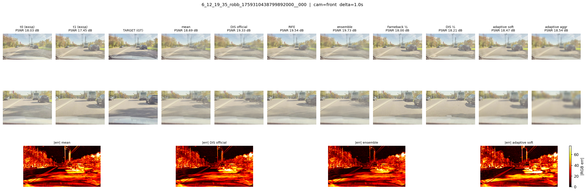
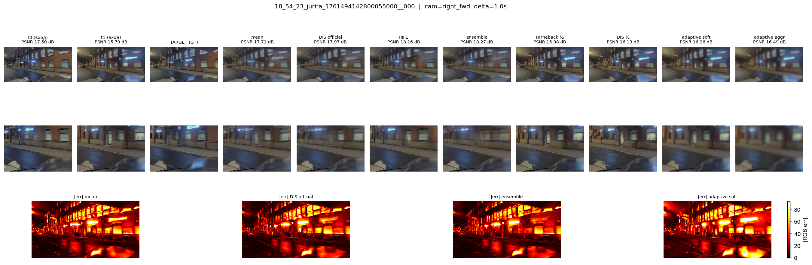
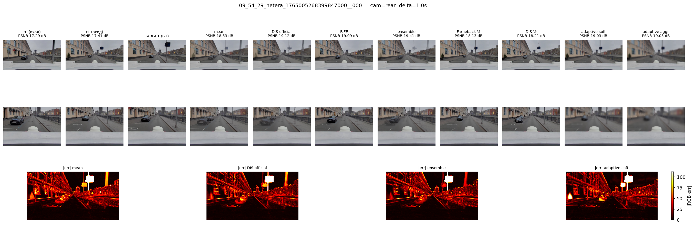
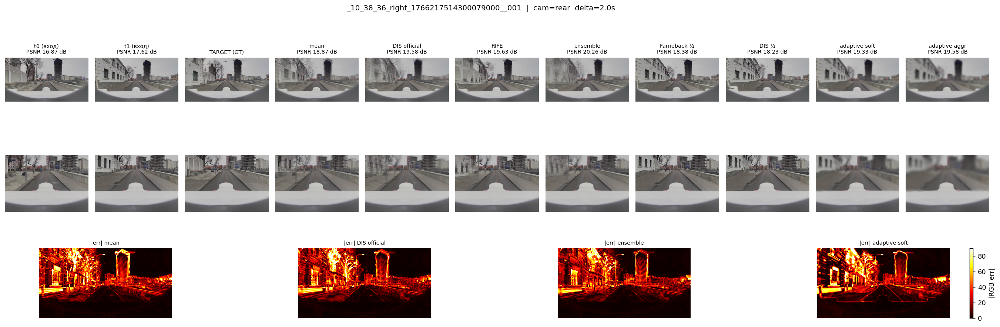
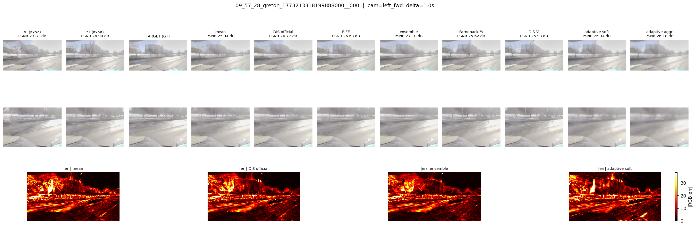
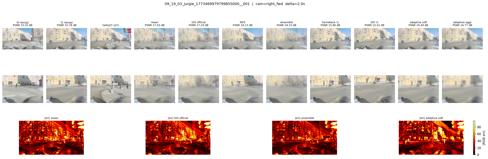
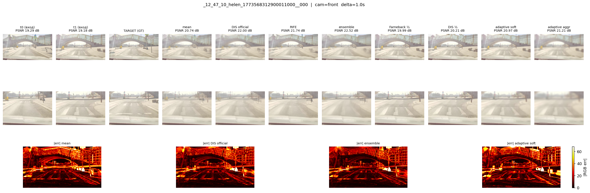
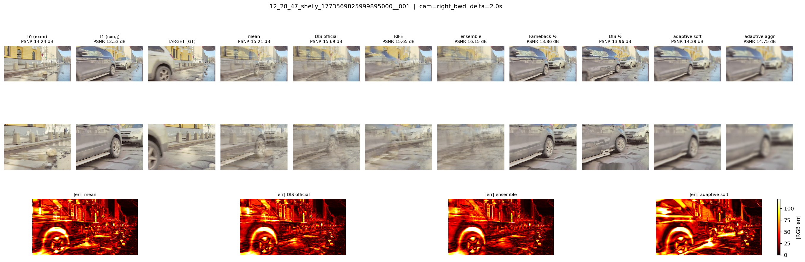

Строка 1: предсказания | Строка 2: zoom на дорогу | Строка 3: карты ошибки |pred−GT|
camera: front | best: ensemble (19.73 dB)

| метод | PSNR |
|---|---|
| ensemble | 19.73 |
| rife | 19.54 |
| dis_official | 19.33 |
| mean | 18.69 |
| adaptive_aggr | 18.54 |
| adaptive_soft | 18.47 |
| farneback_aggr | 18.27 |
| dis_half | 18.21 |
| global_blur | 18.07 |
| t0 | 18.03 |
| farneback_half | 18.00 |
| t1 | 17.45 |
camera: right_fwd | best: ensemble (18.27 dB)

| метод | PSNR |
|---|---|
| ensemble | 18.27 |
| rife | 18.16 |
| dis_official | 17.97 |
| mean | 17.71 |
| t0 | 17.50 |
| adaptive_aggr | 16.49 |
| adaptive_soft | 16.26 |
| dis_half | 16.13 |
| farneback_aggr | 16.13 |
| farneback_half | 15.98 |
| global_blur | 15.98 |
| t1 | 15.79 |
camera: rear | best: ensemble (19.41 dB)

| метод | PSNR |
|---|---|
| ensemble | 19.41 |
| dis_official | 19.12 |
| rife | 19.09 |
| adaptive_aggr | 19.05 |
| adaptive_soft | 19.03 |
| farneback_aggr | 18.54 |
| mean | 18.53 |
| global_blur | 18.39 |
| dis_half | 18.21 |
| farneback_half | 18.13 |
| t1 | 17.41 |
| t0 | 17.29 |
camera: rear | best: ensemble (20.26 dB)

| метод | PSNR |
|---|---|
| ensemble | 20.26 |
| rife | 19.63 |
| adaptive_aggr | 19.58 |
| dis_official | 19.58 |
| adaptive_soft | 19.33 |
| mean | 18.87 |
| farneback_aggr | 18.73 |
| global_blur | 18.40 |
| farneback_half | 18.38 |
| dis_half | 18.23 |
| t1 | 17.62 |
| t0 | 16.87 |
camera: left_fwd | best: ensemble (27.10 dB)

| метод | PSNR |
|---|---|
| ensemble | 27.10 |
| dis_official | 26.77 |
| rife | 26.63 |
| adaptive_soft | 26.34 |
| adaptive_aggr | 26.18 |
| mean | 25.94 |
| dis_half | 25.93 |
| farneback_aggr | 25.89 |
| farneback_half | 25.62 |
| global_blur | 25.58 |
| t1 | 24.90 |
| t0 | 23.81 |
camera: right_fwd | best: ensemble (18.33 dB)

| метод | PSNR |
|---|---|
| ensemble | 18.33 |
| rife | 18.13 |
| dis_official | 17.29 |
| mean | 17.03 |
| adaptive_aggr | 16.77 |
| adaptive_soft | 16.49 |
| farneback_aggr | 16.48 |
| global_blur | 16.26 |
| farneback_half | 15.86 |
| t1 | 15.78 |
| dis_half | 15.42 |
| t0 | 15.25 |
camera: front | best: ensemble (22.52 dB)

| метод | PSNR |
|---|---|
| ensemble | 22.52 |
| dis_official | 22.00 |
| rife | 21.74 |
| adaptive_aggr | 21.21 |
| adaptive_soft | 20.97 |
| mean | 20.74 |
| farneback_aggr | 20.41 |
| dis_half | 20.21 |
| farneback_half | 19.99 |
| global_blur | 19.98 |
| t0 | 19.29 |
| t1 | 19.18 |
camera: right_bwd | best: ensemble (16.15 dB)

| метод | PSNR |
|---|---|
| ensemble | 16.15 |
| dis_official | 15.69 |
| rife | 15.65 |
| mean | 15.21 |
| adaptive_aggr | 14.75 |
| adaptive_soft | 14.39 |
| t0 | 14.24 |
| farneback_aggr | 14.11 |
| dis_half | 13.96 |
| farneback_half | 13.86 |
| global_blur | 13.86 |
| t1 | 13.53 |